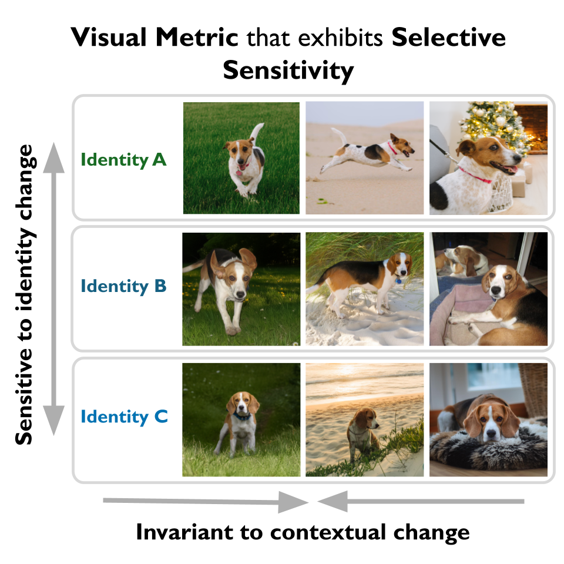
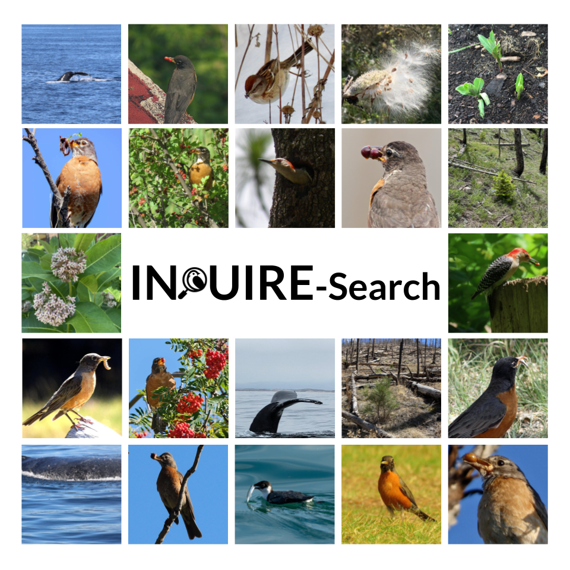
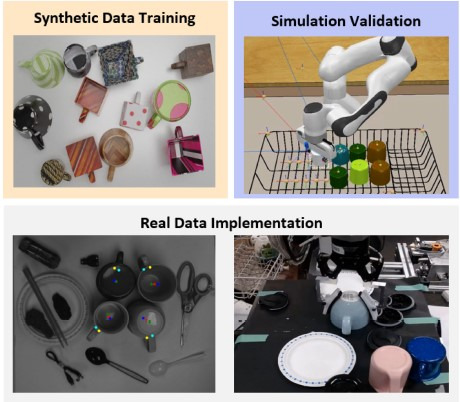

Julia Chae

I study how large vision and multimodal models can become more fine-grained, specialized, and useful for real-world and scientific applications.
I’m a PhD student in EECS at MIT CSAIL, advised by Sara Beery. I collaborate closely with Adobe Research, primarily with Cusuh Ham and Richard Zhang. Previously, I studied EngSci at the University of Toronto, working with Sanja Fidler, Florian Shkurti, and Steven Waslander. I co-organize MLTea at MIT.
research interests
I'm currently thinking a lot about:
- Fine-Grained Perception: Improving how vision and multimodal models distinguish subtle visual differences, particularly by leveraging specialized or synthetic data, or expert knowledge & feedback.
- Multimodal Representations: Understanding how models organize visual and semantic knowledge across modalities, and how the structure of their representations shapes their capabilities and specialization
- AI for Scientific Discovery: Accelerating scientific data curation and discovery with multimodal AI models.
news
| Oct 2026 | Received Honorable Mentions on the MIT Open Data Prize. |
|---|---|
| Sept 2026 | Led the organization of the third CV4E Workshop at ECCV in Molmo. |
| June 2026 | Presented our paper, ID-Sim: An Identity-Focused Similarity Metric, at CVPR 2026 in Denver! |
| May 2026 | Started my internship at Adobe Research in SF working on multimodal embeddings, mentored by Cusuh Ham and hosted by Richard Zhang. |
| Jan 2026 | Gave talks on Interactive Discovery in Large-Scale Biodiversity Databases at Google-MIT lightning talks and the MIT Global Teaching Labs workshop. |
| Oct 19, 2025 | Excited to attend ICCV 2025, co-organize the 2nd CV4Ecology Workshop, and present our PRPG poster at the Instance-Level Recognition and Generation Workshop. |
| Jun 1, 2025 | Started an internship at Adobe Research working on designing a fine-grained visual perceptual metric (w/ mentor Cusuh Ham) |
| May 28, 2025 | Completed my Master of Science (SM) degree at MIT 🎓 |
| Apr 22, 2025 | Attending ICLR in Singapore to present Personalized Representation from Personalized Generation (PRPG) at the main conference! |
| Mar 5, 2025 | Gave a talk at Cohere (See recording here) |
| Jan 22, 2025 | Our paper, Personalized Representation from Personalized Generation was accepted to ICLR 2025! |
| Jan 6, 2025 | Served as an instructor for the three-week intensive Computer Vision for Ecology Workshop at Caltech Resnick Sustainability Institute |
| Sep 30, 2024 | Co-Organized 1st ever CV4E Workshop at ECCV in Milan! |
Selected Publications
For the full list, please visit my Google Scholar.
|  | Julia Chae, Nicholas Kolkin, Jui-Hsien Wang, Richard Zhang, Sara Beery, Cusuh Ham CVPR 2026 Project Page / Paper / Code / Dataset |
|  | Edward Vendrow*, Julia Chae*, Rupa Kurinchi-Vendhan*, Isaac Eckert, Jazlynn Hall, Marta Jarzyna, Reymond Miyajima, Ruth Oliver, Laura Pollock, Lauren Shrack, Scott Yanco, Oisin Mac Aodha, Sara Beery Ecological Informatics Paper / Code & Data * Denotes equal contribution |
 | Shobhita Sundaram*, Julia Chae* , Yonglong Tian, Sara Beery, Phillip Isola International Conference on Learning Representations (ICLR), 2025 ICCV Instance-Level Recognition and Generation Workshop (ILR+G), 2025 Project Page / Paper / Code / PODS Dataset * Denotes equal contribution |
|  | Zhongzhen Luo , Wenjie Xue, Julia Chae , Guoyi Fu IEEE Robotics and Automation Letters, April 2022 Journal Paper |
 | Cody Reading, Ali Harakeh, Julia Chae , Steven L. Waslander [Oral Presentation]. Conference on Computer Vision and Pattern Recognition, 2021 Project Page / Paper / Code / Talk |
theses
SM Thesis @ MIT, supervised by Sara Beery
BASc Thesis @ U of T Eng Sci, supervised by Sanja Fidler
Thesis on the exploration of inter-image relationships for contrastive learning to investigate how context between images can be used to improve part-based dense representation learning.
education
University of Toronto
BASc. in Engineering Science | 2018 - 2023
Robotics Major, Machine Intelligence Minor (cGPA: 3.97/4.0)
some fun projects!
Past projects I had fun building — pre-vibe coding.
outside research

Music
I listen to everything from classical to alternative rock and have an ARCT in piano performance. I used to play at community events (and would love to again!), plus brief, mostly unsuccessful stints on guitar and cello.

Cooking
I cook mostly because I like eating but I really enjoy the process too! I post some of them on a small (and very amateur) cooking Instagram — and I’m always open to new recipe ideas.

Outdoors
I enjoy the outdoors in almost any form — hiking, canoeing, backcountry camping, and amateur birding / photography (my sister is the professional one; she also photographs people professionally).